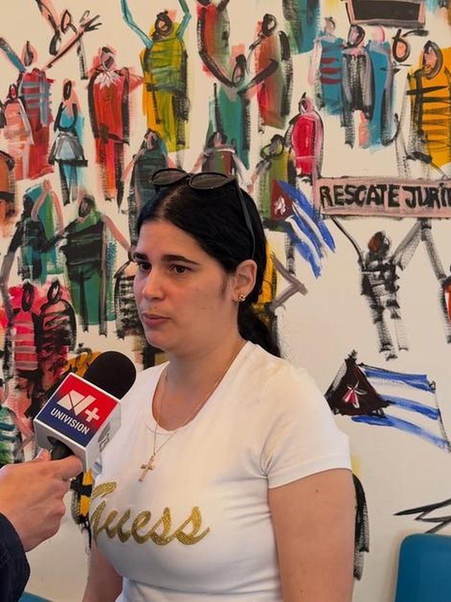

Expediente EXP-030 · Presa política

- NOMBRE:
- Sissi Abascal Zamora
- ORIGEN:
- Carlos Rojas, Jovellanos, Matanzas
- CONDENA:
- 6 años
- PRISIÓN:
- La Bellotex, Matanzas (hasta mayo de 2026)
- CARGO:
- Desacato, atentado y desórdenes públicos
- ESTADO:
- Excarcelada el 14 de mayo de 2026 y enviada al exilio en Miami
Sissi Abascal Zamora, la integrante más joven de las Damas de Blanco y miembro del Partido por la Democracia Pedro Luis Boitel, fue golpeada y detenida durante las protestas del 11 de julio de 2021 en Carlos Rojas, Jovellanos, Matanzas. Según su madre, Annia Zamora, ella y sus hijas estaban sentadas pacíficamente frente a la estación de policía preguntando por el paradero de su esposo, Armando Abascal, cuando un grupo de mujeres vestidas de civil las agredió. Aun así, Sissi fue acusada de desacato, atentado y desórdenes públicos y condenada a seis años de prisión.
Cuando se rechazó su apelación, en diciembre de 2021, la esposaron en el propio tribunal y la llevaron directamente a la prisión de mujeres La Bellotex, en Matanzas. Allí le negaron la libertad condicional y el paso a un régimen de menor severidad, y denunció mala alimentación, deficiencias médicas y un quiste ovárico que necesitaba cirugía.
El 14 de mayo de 2026, con 27 años, fue excarcelada y enviada a Miami con una visa humanitaria del Departamento de Estado, gestionada por la Fundación Rescate Jurídico. Debía cumplir su condena hasta noviembre de 2027. Contó que la Seguridad del Estado le había propuesto salir del país por sus problemas de salud. Berta Soler calificó la salida de «prácticamente forzosa». «Hoy con toda certeza, Cuba me duele», dijo Sissi al llegar. Su padre sigue en Cuba.